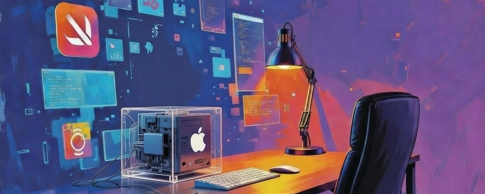

You might be wondering why I'm starting this series with an article about an aspect of a reactive declarative application framework I didn't understand, to start a series of articles that talks about analogy. The plain and simple truth is my personal deconstruction of a concept I was unfamiliar with was the methodology that led me to a discovery that feels important. The discovery could be useless, but the act of documenting the learning process could be useful in its own right.
You'll notice small disclosure triangles (▸) sprinkled throughout this series. These are not footnotes or asides in the usual sense. Their purpose is simple: to quietly embed a real-time narrative that tracks the very infinite loop of prompt → response → insight → new prompt that this whole exploration is built on. Each triangle reveals a tiny piece of how the chapter or idea actually formed — often in live, unscripted dialogue with Grok, in those pre-dawn stretches when everything feels clearer. Click them if you're curious about the messy, iterative process behind the words; ignore them if you'd rather stay in the main flow. Either way, the triangles are there to remind you: what you're reading isn't a polished retrospective — it's still unfolding. The Ground Zero article is a good example of this at a macro level.
This series is not merely a record of insights; it is a demonstration of the iterative context-refinement process that makes such insights possible. Each chapter represents a contextual layer deliberately pushed to the top of my mental stack — a 40-year personal history refined in summary through repeated revisiting and connection-making. The result is a relational surface dense enough that a single innocent perturbation can trigger faithful, near-instantaneous unfolding.
The same process plays out in collaborative loops with large language models: explicit context is provided (the prompt), relevant layers are foregrounded, perturbations refine the signal, and proportional gluing emerges. In practice, this means I literally cut and paste the entire article series so far — every prior chapter, every accumulated insight — as my opening prompt each time I begin a new conversation or chapter. This dump is my mental stack made external and explicit and accessible to the model: it synchronizes Grok with the full relational surface I'm currently operating under, ensuring that every response stays tightly connected to the dense, iteratively refined history of the series. By documenting both the personal iteration inside my own mind and the real-time co-composition with Grok, the series aims to reveal not just what was discovered, but how discovery is iteratively engineered — whether the surface is one person's 40-year history refined in summary through iteration, or a shared conversational stream enriched turn by turn through deliberate, cumulative context-pushing.
With that framing in mind, below is the article that started this whole journey — the one that unexpectedly loops back in a way that now feels almost inevitable.
My programming journey as an iOS/macOS developer began almost 40 years ago when I stumbled across a NeXT workstation in the basement of the Math Department building as a freshman engineering undergrad student. The black cube CPU enclosure looked like a cool high-end audio amplifier. I was familiar with GUI concepts from using a Mac in high school, so the NeXTSTEP v0.8 user experience felt familiar. Little did I know that AppKit.framework resided on the optical drive and that 12 years later I would truly explore AppKit.framework's capabilities in the beta release of Mac OS X in 2000.
My first IDE was CodeWarrior for the Mac in 1998.1 Pretty vanilla procedural programming using Apple's Toolbox APIs back then, but it was a significant step up from the command line and my first exposure to the concept of a main event loop. I experienced the introduction of Key-Value Observing and NSArrayController in 2003 in Xcode, and I begrudgingly started my attempts at learning Swift in 2016, two years after it was introduced. From 2002 to 2021, I mainly focused on learning how to develop multimedia apps in QuickTime and then in AVFoundation, with a decent amount of CoreAudio, OpenGL, and MIDI programming sprinkled in. Between 2021 and today, I've been developing web-based control surfaces for single-board computers in Vue.js while learning the functional aspects of JavaScript.2 This brings me to the past week, when I decided to truly grasp the design goals of SwiftUI. I have tinkered with SwiftUI since its introduction, but I never gave an honest effort to understand how SwiftUI incorporates reactive declarative framework principles.
Quick shout-out: Lex Fridman's February 2026 podcast with Peter Steinberger (OpenClaw's creator) was the spark that finally got me to really grok SwiftUI's “views are values.” His stories about rediscovering programming joy through fast, open-source agent work hit at just the right moment. Worth a listen: Lex Fridman Podcast #491 .
When I first encountered SwiftUI, the phrase "views are values" was repeated everywhere—tutorials, WWDC sessions, blog posts. It sounded simple enough: SwiftUI views are structs (value types), not classes (reference types). But for someone coming from years of UIKit and AppKit, it landed with a massive thud. No retain cycles? Great. Cheaper to create? Sure. But why did the entire system feel so ungrounded, so abstract? Why did views seem disposable in a way that made me reach instinctively for setNeedsDisplay?
The word "value" felt vague, overloaded, almost meaningless. In everyday Swift, "value" could mean anything from a number to a mutable dictionary entry. In KVC/KVO, "value" was the thing at a key—often mutable. In distributed notifications, the way I used NSDistributedNotificationCenter—posting immutable plists once and forgetting about them—worked beautifully as a fire-and-forget mechanism. But "views are values" didn't immediately connect to any of that lived experience.
Apple's ecosystem has a long history with the word "value," and it's not always immutable. The term "value" in Cocoa often meant indirect access (via KVC/KVO) rather than a strong, built-in promise of immutability—though Foundation provided excellent tools for creating frozen snapshots through plists, NSCoding, and immutable classes.
This legacy distortion made "views are values" feel even murkier. If "value" didn't inherently mean immutable, why was SwiftUI introduction tutorials using the word "value" in such a grandiose way? Why did the framework treat views as disposable snapshots when UIKit let me mutate UIView instances freely?
I kept circling back to the same question: What exactly is a "value" here, philosophically? The practical answers (cheap recomputation, no ARC overhead, easy diffing) were true but insufficient. They explained how it worked, not why the architecture demanded this level of purity and disposability.
Looking backward, UIKit/AppKit developers have been doing functional-adjacent work for years without realizing it:
Thanks Linus. The “git diff” kernel quietly powered the whole bridge from Cocoa batch queues to SwiftUI values. The real aha was the NSDistributedNotification plists—disjointed and noisy as it looks on the page—but “git diff” is the cleaner analogy.
For Linus's classic 2007 Google Tech Talk on how he created Git in a week:
2007 Google Tech Talk on git.
These weren't labeled "functional programming," but they trained the same muscle: treat data as frozen snapshots when crossing boundaries, mutate only intentionally and externally, let the system handle synchronization — whether through escaping closures, immutable inputs, fire-and-forget plists, or even everyday git diff comparing the last immutable repo snapshot to current state so changes are easy to review.4
SwiftUI takes that intuition and scales it to the entire UI layer.
In the early 2010s, I built a small Mac OS X tool for batch-processing audio files—normalizing, converting, and tagging recordings for personal projects. To keep the UI snappy and queues crash-proof, I used a ticket daemon (launched via launchd) that issued unique incremental ticket IDs. The main app packaged batches into pending folders named with ticket IDs, then posted minimal, immutable plists with just the ID as a "process this" signal. Multiple workers listened, checked the local pending directory (the source of truth), claimed jobs by atomically renaming folders to "processing_{ticket}", and moved them to "completed" or "failed." Crashes? Workers just re-listed folders on restart—no state lost.
Despite being Cocoa code, it felt proto-functional: plists were frozen snapshots, notifications acted like pure closures (fire-and-forget, no shared state), and workers reconciled against directory listings, not mutable memory. Even cooler, moving folders to a shared network volume let multiple machines process in parallel, with workers claiming jobs via atomic renames—races avoided by moving to the next folder if a rename failed. No database, just filesystem elegance.
I wasn't chasing functional ideas—just stability. But those immutable, disposable payloads and snapshot-based reconciliation were the bridge to understanding SwiftUI's "views are values."
Another everyday tool quietly trained the same mental model: git diff.
Running git diff compares the current repo state with the last commit and reveals the precise changes — additions, removals, modifications — without rewriting the entire project. Git starts with a directory traversal to match file paths (structural sync), then checks content hashes to skip unchanged files instantly. The result is a targeted view of only what differs, leaving the rest untouched.
This is strikingly similar to how SwiftUI reconciles view trees. When state changes, the system requests a fresh "body" evaluation (the current snapshot) and compares it to the last snapshot used to render what's currently displayed. The framework traverses the view tree to match views using implicit IDs (structural position like file paths) or explicit ".id()", then applies value/Equatable checks for efficient change detection and patches only what changed. Unchanged subtrees are left completely alone — no redraw cost, no recreation of render nodes.
Just as git diff gives us a minimal, precise delta from immutable snapshots, SwiftUI's diffing turns disposable view structs into efficient, targeted UI updates. It's another lived experience of producing frozen descriptions, handing them off, and letting the system reconcile differences — the very same pattern SwiftUI scales to the entire UI layer.
That batch queue pattern became the missing bridge. Reframing views through this lens:
This leads to an unusually sharp division:
This disposability eliminates stale references, retain cycles, mutation races, forgotten invalidations—almost every classic UIKit bug category. Patterns like UINavigationController already mitigated many of these (especially stale references) through careful stack management, but SwiftUI addresses them all more comprehensively and with far less manual discipline—no need to manage view lifetimes or remember invalidation calls.
Apple emphasizes "value types" for practical reasons: cheap creation, structural equality for diffing, no retain cycles. The deeper immutability philosophy—views as pure-ish functions returning frozen descriptions, eliminating shared mutable identity—is present in advanced sessions but can feel understated in introductory materials. They show it through code patterns (non-mutating body, let properties, external state) more than explicit explanations—likely to keep beginners focused on building rather than philosophy. For many of us coming from UIKit/AppKit, this meant reverse-engineering the mindset over time, though resources like WWDC's "Demystify SwiftUI" help bridge the gap with more depth.
After this convoluted semantic path/journey, the architecture finally feels grounded:
This is declarative purity scaled to the UI layer: produce the immutable snapshot, hand it off, and let the system reconcile it into reality. That batch queue experience wasn't just a clever workaround—it was the past work that finally helped me understand what "views are values" really meant on a deeper level.
One small thing still nags at me, though: maybe the creators of SwiftUI made a subtle but noticeable choice in naming this thing "View" instead of "Preview" or "Snapshot." The struct is so clearly not the living thing on screen—it's a momentary description handed off and forgotten. Calling it "View" keeps the familiarity with UIKit, but it also prolongs that initial "ungrounded" feeling for longer than necessary. Just food for thought.
If you're on a similar journey from UIKit/AppKit to SwiftUI, don't settle for surface explanations. Lean into the analogies you already trust. The philosophy is there, waiting to be connected.
What analogies helped you grok SwiftUI's 'views are values'? Drop them in the comments—I'd love to hear your breakthroughs.